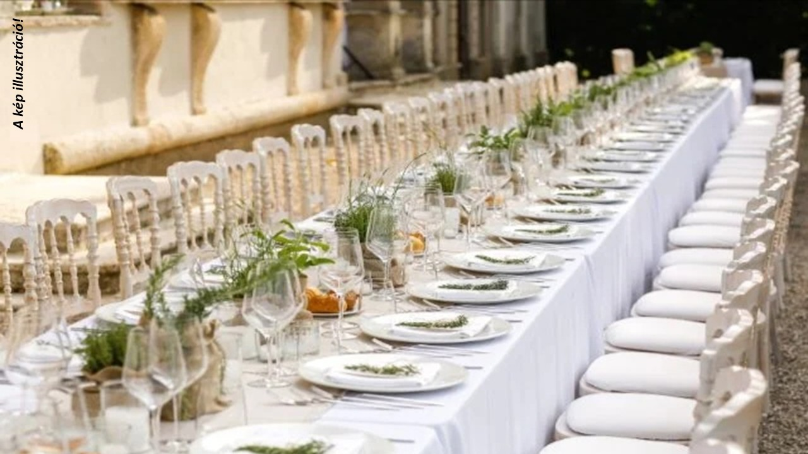
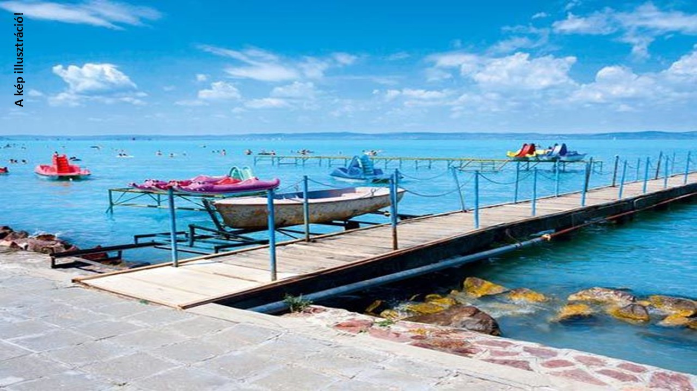
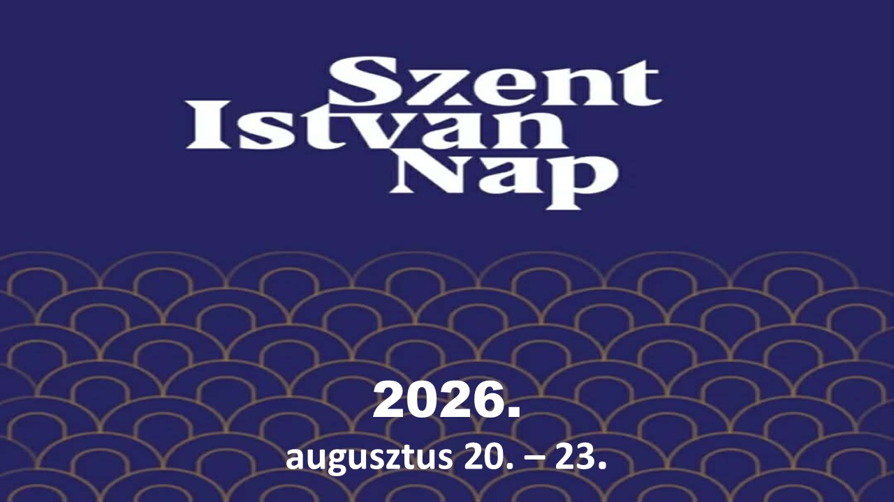

PROGRAMJAINK
+ Új program felvétele
Ebben a hónapban jelenleg nincs előre tervezett családi programunk!
2026. MÁJUS
IDŐPONT
HAMAROSAN...
HAMAROSAN...
BÉRMÁLKOZÁS - DORKA
Szerencs
A bérmálkozás egy különleges lelki esemény,
amely a hitben való megerősödést jelképezi. Ez a nap az elköteleződésről, a
felelősségvállalásról és a belső fejlődésről szól. A szertartás segít elmélyíteni a kapcsolatot
a közösséggel és a hittel. Meghitt pillanatokkal, csendes elmélyüléssel és ünnepélyes
hangulattal jár együtt. A bérmálkozás egy olyan állomás, amely hosszú távon is irányt mutathat.
Családi körben még személyesebb és emlékezetesebb élménnyé válik.
RÉSZLETEK

RÉSZLETEK
IDŐPONT
HAMAROSAN...
HAMAROSAN...
BANKETT - DORKA
Szerencs
A bankett az általános iskolai évek
lezárásának közös ünneplése. Lehetőség nyílik arra, hogy együtt ünnepeljük meg ezt a fontos
eseményt egy finom vacsora mellett. Ez az alkalom a közösségről, az összetartozásról és a közös
élményekről szól. A bankett során mindenki felszabadultan élvezheti az estét. Egy méltó, vidám
lezárása az ünnepi napnak.
RÉSZLETEK
2026. JÚNIUS

00
NAP
00
ÓRA
00
PERC
00
MÁSODPERC
2026. JÚNIUS 20.
BALLAGÁS - DORKA
Szerencs
A ballagás egy fontos mérföldkő, ahol lezárul
egy hosszú tanulási időszak, és új fejezet kezdődik az életben. Ez a nap a búcsúról, az
emlékekről és az együtt megélt pillanatokról szól. Ilyenkor visszagondolunk a közös élményekre,
sikerekre és kihívásokra is. A ballagás nemcsak az elválásról, hanem az előrelépésről és a
jövőbe vetett reményről is szól. Jó alkalom arra, hogy megálljunk egy pillanatra és büszkék
legyünk az eddig megtett útra. Az ünnepség közös emlékké válik mindannyiunk számára.
RÉSZLETEK
2026. JÚLIUS

RÉSZLETEK
IDŐPONT
HAMAROSAN...
HAMAROSAN...
NYARALÁS 2026
Beföld - Külföld
A külföldi és belföldi nyaralás egyaránt
kiváló lehetőséget nyújt a kikapcsolódásra és az élményszerzésre. Külföldön új kultúrákat,
szokásokat és ízeket ismerhetünk meg, míg belföldön hazánk természeti és kulturális értékeit
fedezhetjük fel. A városnézés, strandolás vagy túrázás mindkét esetben népszerű program. A
nyaralások segítenek kiszakadni a mindennapi rutinból és feltöltődni. Mindkét forma
maradandó emlékeket nyújt és hozzájárul a testi-lelki feltöltődéshez.
2026. AUGUSZTUS
IDŐPONT
HAMAROSAN...
HAMAROSAN...
NYARALÁS 2026
Beföld - Külföld
A külföldi és belföldi nyaralás
egyaránt kiváló lehetőséget nyújt a kikapcsolódásra és az élményszerzésre. Külföldön új
kultúrákat, szokásokat és ízeket ismerhetünk meg, míg belföldön hazánk természeti és
kulturális értékeit fedezhetjük fel. A városnézés, strandolás vagy túrázás mindkét
esetben népszerű program. A nyaralások segítenek kiszakadni a mindennapi rutinból és
feltöltődni. Mindkét forma maradandó emlékeket nyújt és hozzájárul a testi-lelki
feltöltődéshez.
RÉSZLETEK

00
NAP
00
ÓRA
00
PERC
00
MÁSODPERC
2026. AUGUSZTUS 20. - 23.
SZENT ISTVÁN NAPOK 2026
Budapest
2026. augusztus 20. és 23. között ismét
megtelnek élettel a főváros legszebb helyszínei: a Budai Vár, a Várkert Bazár, a Tabán, a
Duna-part és számos más ikonikus helyszín ad otthont a Szent István Nap eseményeinek.
RÉSZLETEK
RÉSZLETEK
IDŐPONT
HAMAROSAN...
HAMAROSAN...
SZERENCSI ARTÚR NAPOK FESZTIVÁL 2026
Szerencs
A Szerencsi Artúr Napok minden évben az
egyik legfontosabb közösségi rendezvény Szerencs városában. A többnapos programsorozat
koncertekkel, kulturális műsorokkal és családi programokkal várja az érdeklődőket. A
rendezvény célja, hogy bemutassa a város hagyományait és erősítse a helyi közösségi életet.
A fellépők között gyakran ismert magyar előadók és zenekarok is szerepelnek. A gasztronómiai
kínálat sem marad el, hiszen helyi és környékbeli ízeket is meg lehet kóstolni. Az Artúr
Napok remek alkalmat biztosít a kikapcsolódásra és a közös élményszerzésre minden korosztály
számára.
RÉSZLETEK
RÉSZLETEK